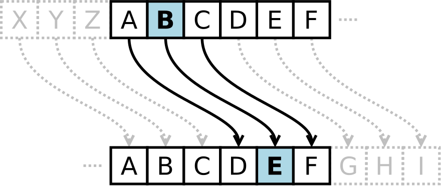
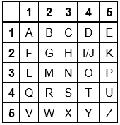
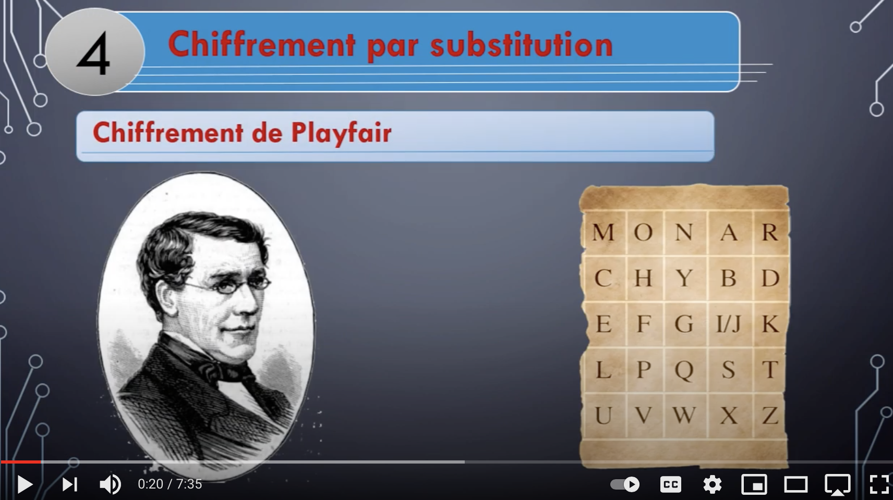
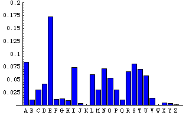
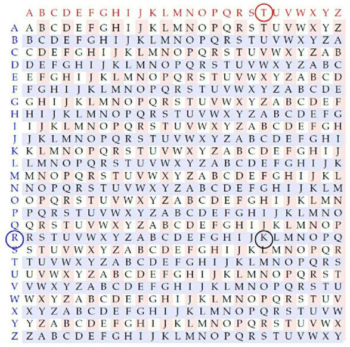
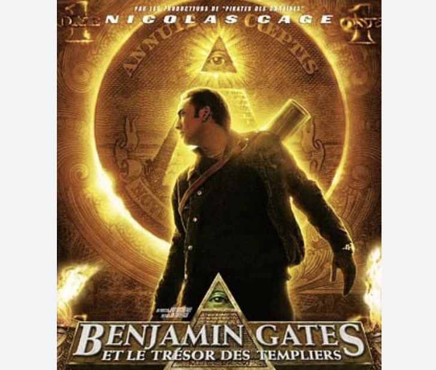
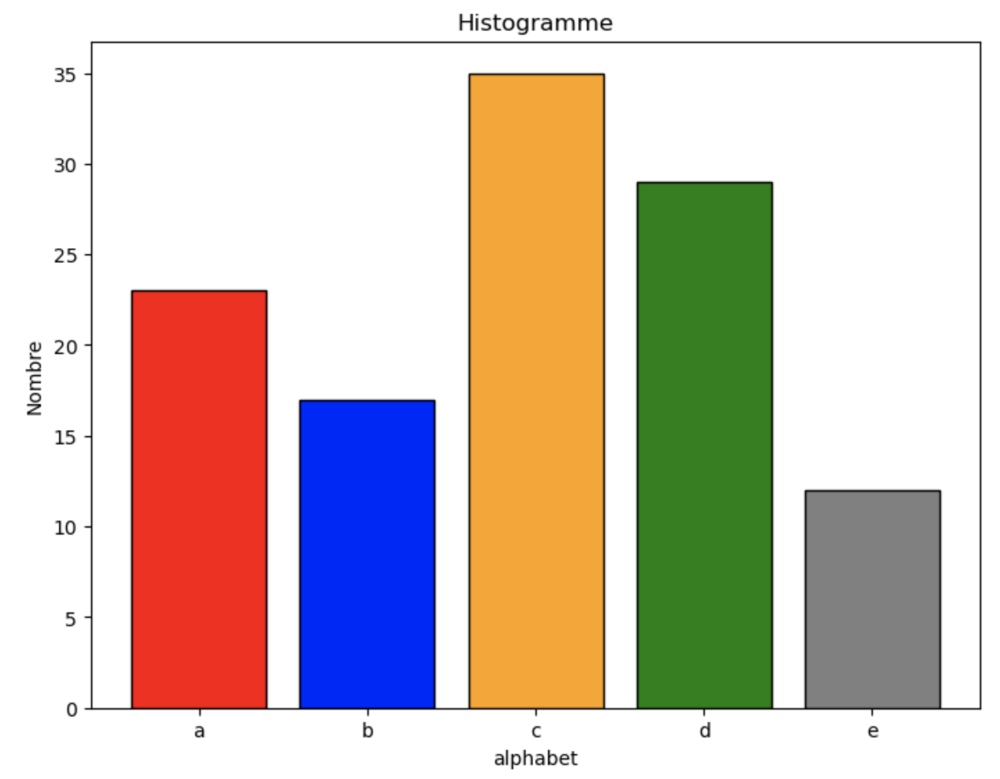

chiffrement symetrique
Ce chapitre contient plusieurs pages:
- sécuriser les communications: Lien 1
- chiffrement asymetrique: Lien 2
- TP sur les nombres premiers: Lien 3
- Projet sur le hack ethique et le chiffrement RSA: Lien 4
Chiffrements symétriques
du chiffrement de Cesar à celui de la machine Enigma…
Vocabulaire
- Chiffrer: transformer les caractères d’un texte pour le rendre incompréhensible, sauf pour celui qui possède la clé de chiffrement.
- Déchiffrer: transformer le texte chiffré en texte clair à l’aide de la clé de chiffrement
- Décrypter: transformer le texte chiffré en texte clair sans posséder la clé.
- Cryptologie: science du secret: possède deux branches
- cryptographie: étude de l’art du chiffrement
- cryptanalyse: analyse des méthodes de chiffrement pour les casser (décrypter)
à quoi sert le chiffrement?
Le chiffrement a pour but de protéger nos données, nos communications, mais aussi de signer nos messages et de s’assurer que l’on communique bien avec la bonne personne:
- Authentification: L’authentification est la procédure qui consiste, pour un système informatique, à vérifier l’identité d’une entité (personne, programme, machine).
- L’intégrité des données désigne le fait que les données ne soient pas modifiées au cours d’une communication ou de leur stockage. Ainsi, si vous envoyez un texte chiffré sur un canal non sécurisé, le texte chiffré pourra être intercepté et altéré par un attaquant avant d’atteindre son destinataire. Pour contrôler cette intégrité, on associe au message une valeur de contrôle.
- La confidentialité: Le chiffrement permet de protéger la confidentialité de vos données à l’aide d’une clé secrète.
Chiffrement symétrique - definition
Le chiffrement symétrique utilise la même clé (ou la même table) pour chiffrer et déchiffrer le message. L’algorithme peut être connu par l’adversaire. Mais le secret repose sur celui de la clé.
Le chiffrement par décalage, ou chiffre de Caesar
Principe
Le chiffre de César fonctionne par décalage des lettres de l’alphabet.

Chiffrement par décalage - wikipedia
| a | b | c | d | e | f | g | h | i | j | k | l | m | n | o | p | q | r | s | t | u | v | w | x | y | z |
|---|---|---|---|---|---|---|---|---|---|---|---|---|---|---|---|---|---|---|---|---|---|---|---|---|---|
| 0 | 1 | 2 | 3 | 4 | 5 | 6 | 7 | 8 | 9 | 10 | 11 | 12 | 13 | 14 | 15 | 16 | 17 | 18 | 19 | 20 | 21 | 22 | 23 | 24 | 25 |
Le chiffrement par substitution monoalphabetique utilise une fonction avec modulo:
$$x \rightarrow x + cle ~[26]$$La fonction utilisée est une fonction périodique, issue de l’arithmétique modulaire.
Compléter l’algorithme du chiffrement de César. On suppose qu’il existe une clé
ccorrespondant au décalage utilisé. Le message clair estmet le message chiffré estm_chiffre
On peut utiliser les fonctions numero(l:str)->int et caractere(n:int)->str
monosubstitution par décalage ou par substitution: Une lettre du message clair va t-elle donner différentes lettres chiffrées, ou une seule?
Facilité du décryptage
Pour decrypter le message, on peut tester une à une toutes les clés, jusqu’à découvrir un message intelligible:
Décryptage par FORCE BRUTE: Combien y-a-t-il de clés possibles à essayer pour celui qui réalise le décryptage? Conclure.
Substitution monoalphabetique utilisant une table
Le chiffrement par monosubstitution a été également utilisé par différentes méthodes utilisant une table.

Carré de Polybe - le mot « bonjour » est ainsi chiffré par le carré de Polybe :12 34 33 24 34 45 42 - wikipedia
Le code issu du carré de Polybe a été utilisé par les prisonniers, qui transmettaient leur message en tapant sur les murs Tap code
Vous trouvez ces méthodes de chiffrement trop simpliste? Regardez alors sa déclinaison avec le chiffrement de Playfair

VIDEO: chiffrement de Playfair - youtube - Astuces et tutoriels
Decryptage par analyse fréquentielle
Le problème avec ce type de chiffrement monoalphabetique, est qu’il est possible de repérer comment sont transformées certaines lettres à partir de l’analyse fréquentielle du message chiffré.
On peut alors utiliser la frequence des lettres pour dechiffrer et comparer avec la frequence moyenne dans une langue. (200 caracteres suffisent). Il y a aussi tout un tas de statistique, comme les lettres uniques, doubles lettres, finales, etc… C’est un marqueur suffisant pour savoir comment le code est fait.

frequence des lettres en français, calculée sur la lecture de plusieurs ouvrages classiques (10 millions de caracteres)
Cette analyse frequentielle est plus difficile (mais pas impossible) dans le cas du chiffrement de Playfair, car celui-ci utilise une methode de substitution d’un groupe de 2 lettres: c’est une substitution polyalphabetique. Le nombre de combinaisons possibles avec 2 lettres est alors de $26^2 = 676$.
Substitution polyalphabétique
Principe
Polyalphabetique: Se dit d’un chiffre où un groupe de n lettres est codé par un groupe de n symboles. Le chiffrement Playfair, vu plus haut s’apparente à une substitution polyalphabetique, puisqu’il substitue des digrammes (groupes de 2 lettres) dans le texte d’origine.
Contrairement aux chiffrements monoalphabetiques, qui sont des chiffrements par flot (caractères transformés un à un), les chiffrements polyalphabetiques réalisent un chiffrement par blocs (plusieurs caractères transformés en une fois).
L’exemple suivant montre une polysubstitution simple avec une clé de longueur 3 qui va décaler les lettres de l’alphabet :
On définit la clé ‘123’ qui indique que le premier caractère sera décalé d’une position, le second de 2 et le troisième de 3 positions, etc.
Le mot : WIKIPEDIA donne donc dans ce cas XKNJRHEKD.
Mais si on chiffre le mot : AAAAAAAAA cela donnera BCDBCDBCD. La lettre A ne donne pas toujours la même correspondance chiffrée.
Chiffrement de Vigenère:
Le chiffrement de Vigenère utilise ce principe de décalage à partir d’une clé exprimée par un mot.

image issue du site books.openedition.org
C’est souvent ce type de codage qui est proposé dans la litterature et le cinema.

affiche du film Benjamin Gates et le Tresor des Templiers
Décryptage
L’analyse des fréquences est moins pertinente lorsque le message a été chiffré avec un chiffrement polyalphabétique (qui tend à rendre aléatoire la fréquence des lettres).
Si on parvient à découvrir la périodicité, on peut en déduire la longueur de la clé. La connaissance de la longueur de la clé est essentielle pour pouvoir pratiquer l’analyse frequentielle: Une même lettre ne donne pas toujours le même caractère chiffré.
Le decryptage par force brute repose sur l’essai de toutes les clés possibles, par combinaison sur tous les caractères de la clé. Si celle-ci a une longueur n, cela va faire $X^n$, où X est la longueur de l’alphabet. C’est une fonction exponentielle.
La fonction de dechiffrage est alors executée un nombre de fois correspondant à $X^n$, dans le pire des cas.
La machine Enigma
Enigma: machine électromécanique portative servant au chiffrement et au déchiffrement - wikipedia
Des branchements permettent d’ajouter des permutations des caractères.
Tout ceci modifie l’alphabet chiffré et augmente sérieusement la complexité.
Comme tout chiffrement symétrique, déchiffrer se fait avec la même machine, à condition d’utiliser la même clé.
Son utilisation la plus célèbre fut celle faite par l’Allemagne nazie, avant et pendant la Seconde Guerre mondiale, la machine étant réputée inviolable selon ses concepteurs.
Le principe de la machine Enigma était connu. Le concepteur savait à l’avance que certains modèles pourraient être volés par les alliés. Ce qui fit son efficacité, c’est le nombre immense de combinaisons possibles pour les réglages initiaux de la machine et le choix de la clef brute du message.
Les cryptanalystes britanniques, dont Alan Turing
Exercices
Substitution monoalphabétique: Code de César
- Question 1: Quelle clé a été utilisée pour chiffer ce texte (avec l’algorithme de César)?
-
Question 2: Décrypter ce message.
-
Question 3: Proposer un programme en python qui chiffre un message clair
men un message codé selon la clé numériquec.
Aide:
-
La fonction
ord('x')retourne un entier correspondant à la position d’un caractère dans la table ascii. Par exemple,ord('A')retourne 65,ord('B')retourne 66,… -
La fonction
chr(N)retourne le caractère de rang N:chr(65)retourne ‘A’.
Substitution polyalphabétique: Chiffrement de Playfair
A partir des explications données dans la video:
- Question 1: Construisez la matrice pour l’algorithme de Playfair avec la clé estienne.
- Question 2: Chiffrer le message: ACTIONREACTION
- Question 3: S’agit-il d’une méthode utilisant la substitution monoalphabetique, ou polyalphabetique?
- Question 4: Avec cette méthode, le decryptage est-il possible par analyse fréquentielle?
Frequences des lettres dans un texte
La fonction suivante retourne une liste de 26 valeurs de type float, donnant dans l’ordre de l’alphabet, la frequence pour chaque lettre dans un texte:
- Question 1: Compléter le script de la fonction
freq.
Soient les deux textes chiffrés suivants:
a.
b.
-
Question 2: L’un des 2 a été chiffré avec un algorithme de substitution mon-alphabetique, et l’autre, poly-alphabétique. Lequel est mono-alphabétique?
-
Question 3: Tracer un histogramme à partir du texte chiffré en mono-substitution. On donne un exemple de script ci-dessous pour réaliser le graphique:

Chiffrement symétrique par la fonction XOR
exercice inspiré de la page sur le chiffrement de glassus.github.io
- Question 1: La fonction XOR est la fonction du OU EXCLUSIF.
Donner la table de vérité de la fonction XOR
- Question 2: A partir des lignes suivantes, vérifier que l’opérateur
^en python réalise la fonction XOR sur 2 nombres écrits en valeur décimale:
- Question 3: Programmer la fonction
xoren python qui retourne le resultat de XOR appliqué aux 2 paramètres a et b.
Exemple:
-
Question 4: Peut-on utiliser la fonction XOR pour chiffrer PUIS dechiffrer un message, avec la MEME clé de chiffrement? Expliquer à partir de l’exemple ci-dessus.
-
Question 5: On s’interresse maintenant à la programmation de la fonction XOR pour chiffrer un message à partir d’un masque:
Le masque (correspond à la clé) aura une longueur inférieur au message. On utilise le masque selon la méthode de chiffrement polyalphabetique vue en cours.
Le chiffrement demande de faire correspondre les caractères avec des nombres entiers. On utilisera pour cela un alphabet de 32 caractères ($2^5$). Chaque lettre de l’alphabet correspondra alors à un nombre compris entre 0 et 31.
-
Question 6: Lorsque l’on place 2 entiers inférieurs à 32 dans la fonction XOR, celle-ci retourne un entier également inférieur à 32. Pourquoi? (Representer ces nombres en binaire, sur un octet, et verifier cette affirmation)
-
Question 7: Compléter la fonction
chiffre(message, masque)qui chiffre message en le XORant avec masque.
Cette fonction doit pouvoir aussi servir à déchiffrer le message chiffré.
-
Question 8: Utiliser la fonction
chiffrepour effectuer le chiffrement puis le dechiffrement du message. -
Question 9: Pensez vous que cette méthode de chiffrement est assez resistante face à une attaque de cryptoanalyse? Si oui, pourquoi?
Liens
- Suite du cours: chiffrement asymétrique
Documentation, sitographie
- Chiffrement : notre antisèche pour l’expliquer à vos parents article de NextImpact
- chiffrement de Vigenère: wikipedia
- Interstices : coder et decoder. La machine Enigma
- sécurisez vos données avec la cryptographie openclassroom